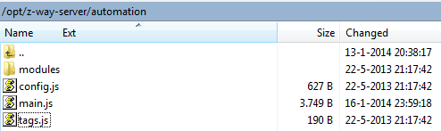
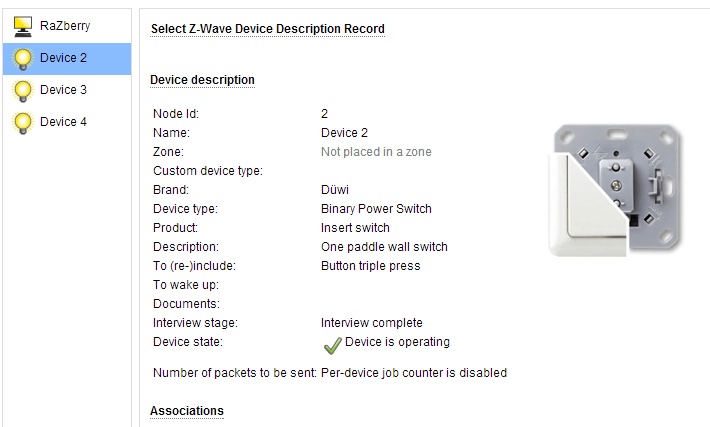

For a while I've been toying around with my raspberry pi + razberry z-wave module, and I was able to get everything working together with openremote, following the instructions here: http://www.openremote.org/display/docs/OpenRemote+2.0+How+To+-+Z-Wave+with+Razberry, but now that I've re-installed my raspberry, I'm running into trouble.
Since the official razberry forum seems to be dead (can't post anything there anymore, forum is full of spam and complaining users), I hope someone here can help me out (before I toss it out of the window and buy a proper z-wave controller  )
)
First of all, I had to do install z-way server 1.3.1, because 1.4.1. just wont start (see http://en.z-wave.me/content/z-way-server-v141-inst-working-v131-works-solved)
After I got that working, I wanted to install RaZ-OR, but for that I would have to modify /opt/z-way-server/automation/config.json , but there's nu such file there...
This is all I got:

Manually creating it and adding openremote.js doesn't do anything either.
Another strange thing is that commands like http://myrpip:8083/ZWaveAPI/Run/devices2.instances0.commandClasses0x20.Set(255) result in errors like : 'Uncaught TypeError: Cannot call method 'Set' of undefined' eventhough I certainly have a device 2 (a simple on/off switch)

any ideas?
{kind=link}
{kind=link}